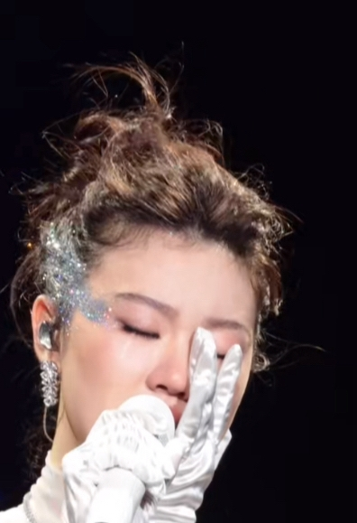
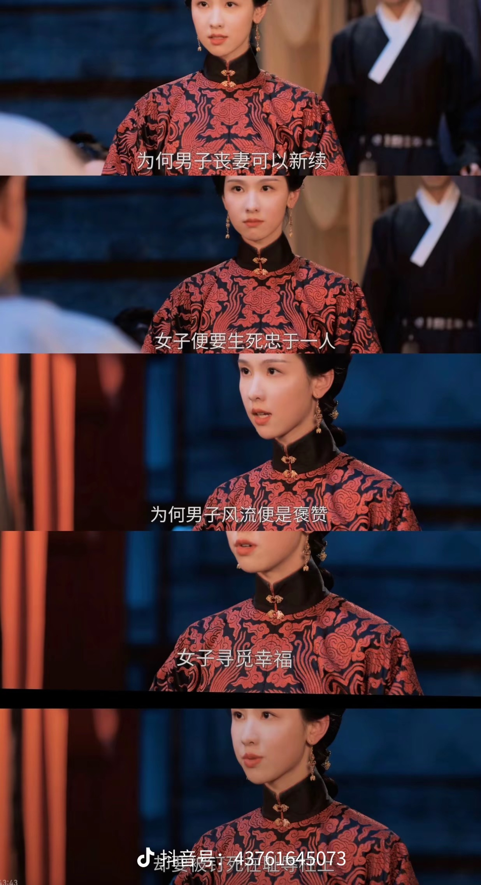
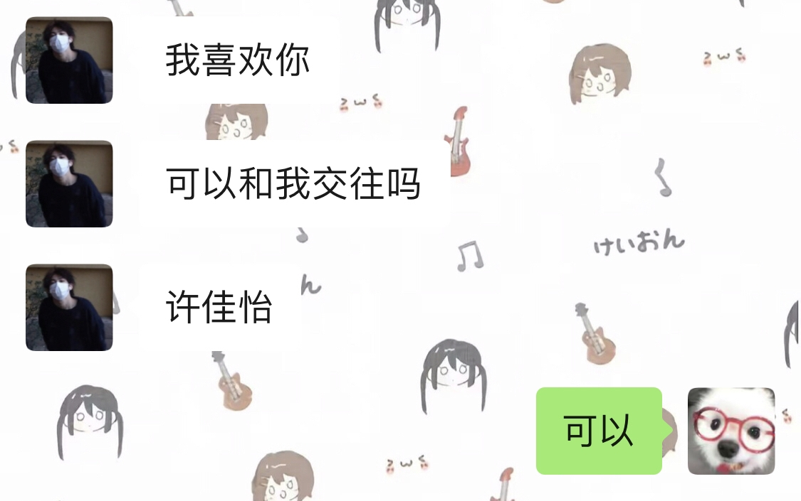

真有钱有身份的根本不会嫌你物质，还特别希望你物质
假如是你，站在舞台中中间，你的眼前千万个星星点点从全国各地甚至国外奔赴山海为你而来，他们可能是几千公里的硬座，也有不要全勤卑微请假的打工人，也有行动不便的人坐着轮椅，如果是我，当我站在台上那一刻，荧光棒亮起一瞬间，我就已经泣不成声[暗中观察]，所以不要对开演唱会哭的明星去嘲笑他们，这是对歌迷的爱，对自己和德何能的感叹，不仅仅是单依纯，我的意思是，所有歌手
阿马特辣斯 
有的人不要对她太苛刻 爱哭不是错 她只是在成长 这是她感性的阶段[比心]
一直认为眼泪赋予了人别样的神性，在感触与自己毫无关联的情绪时，眼泪会先言语一步落下，心永远会为哪怕再小的事所触动。人类发明了语言，可有些时候，言语没法表达的，只能靠泪水倾泻。在黑暗之中，在迷茫之中，眼角晶莹的泪滴闪闪发光，传递着无言而真诚的祝愿。眼泪从来不是弱点，它象征着柔而韧的力量，是悲悯，是同情，是婉转而又坚定的赞歌。
我以为会有人说她哭也唱那么稳呢
我一直觉得感性是上天赋予人的天赋，让我们可以捕捉这个世界细腻绵柔的情绪，感性是我们感知世界的触角。爱哭也没什么不好，至少这样的我们可以永远热泪盈眶[抱抱你]
她唱给电影人的情书的时候那个哭真的特别特别加分[流泪]
我每次一唱爱的回归线就想哭 感觉这个真的是改不了控制不了[黑脸]
她真是一个非常感性的小女孩，当时中国好声音我一集不落追完，每一次她代表战队出战或者自己的队伍取得好成绩，她都会感动的流眼泪，是一个很真诚的小女孩
张东升要是在山东，管你能不能赚钱，你是有编制的老师，所有人都奉承你[捂脸]
每一个被娘家看不起男人身边都有一个懦弱且装聋作哑的妻子，每一个被婆家欺负的女人身边都有一个不作为且装傻的帮凶丈夫
老师多受人尊重，收入很高还有假期。对女儿好，对他们好。还有时间做家务，照顾家庭。这老头老太太真够呛，太势利了。
唐国强是真牛逼，历史牛逼人物演了个遍
他老婆能不生气吗，就喝了顿酒老公和女朋友变正常取向了，她自己被抛弃了[九转大肠]
成都人听了都摇头
明恋大家都知道 暗恋只有自己知道是小丑[尬笑]
小时候净顾着用它夹眉毛了[看]
原来是刺杀贵妃请求诛九族的方法[逞强落泪]我们庄寒雁已别无他法[逞强落泪]
这个剧牛就牛在 女主母亲知道内情 不屑与姨 娘互撕 暗斗 只专注搞死庄老头
刺杀贵妃可是诛九族，但凡沾亲带故的都得死，傅家，庄家都得死，母亲已死，是非对错我已无心分辨，烂命一条就是干！
太震撼了，太正了！！！这两集传达的三观[流泪]从未看过这样的剧 雁子啊！[泣不成声][泣不成声][泣不成声] 
这个贵妃的扮演者感觉非常好，面相和演技说不出的舒服[赞][赞]
谁懂昨晚上谭医女问雁子母亲的腿如何了，我真哭死[流泪][流泪][流泪]
如果骄傲的叶凡是好蛋，我支持她坐上皇位[感谢]
苗贵妃费心费力找人为阮惜文治腿 结果好不容易治好了结果被庄爹给害了 苗贵妃约好了来年上元节要看见她站起来 结果连阮惜文最后一面也没见上[流泪]哭死[流泪][流泪][流泪]
同志们我看懂了啊，雁此举是破釜沉舟了，威胁贵妃成功便是贵妃帮她，不成功就是诛九族的罪，跟他父亲同归于尽[泣不成声]（跟男主结婚时已经重入祖谱了）
傅云夕真的恐怖，他早就猜到庄不会放过女主的母亲，却没向女主告知，只为女主没有退路唯一的选择就是依靠他，口蜜腹剑的男主，啊，他不配拥有真心。
当时只有前面一个片段（庄寒雁把钗刺向贵妃）然后好多人说女主蠢，说怎么敢威胁贵妃的。现在知道了吧，成功了贵妃就帮她，不成功就是诛九族[看]
是想杀了贵妃，连坐他父亲株连九族
庄寒雁看似鲁莽威胁地背后，实则是为了向贵妃表明心迹：我！庄寒雁，为了手刃仇人，九死亦犹未悔！我的性命就是我向您交上的投名状！[猪头][猪头]
我也想养个弟弟。不太敢[捂脸]
后任 快点带着你的小钱钱飞奔过来
最窝囊的方式：接[憨笑][赞] 我接接接
我的已经来了[愉快] 
这才是敢讲真话的博主，可惜太多人装疯卖傻不喜欢听这样的话
这才是真能量[赞]
西伯利亚在世界上残暴是排第一的，
中国历史几千年的记忆就是警惕北方的威胁
英国占领的香港大多数都是粤语，现在可好，到处都是普通话[抠鼻]
西伯利亚寒潮很可怕
用不用心 在不在乎 真的从字就能看出来[捂脸]
俺只喜欢别人写的，我自己写出来的字像勒索信[听歌]
我时常觉得文字的力量非比寻常，因为笔尖落下的力量源于心脏跳动的力量
所以我一直觉得当面给一封情书表白是最爽的
大家都忘记了当年小米在日本的广告了吗，当时不要太炸裂[看]
你们知道小米原子弹的那个广告吧[捂脸]那个广告过后日本人气愤的去找小米要求把新品降价以示道歉
当时小米的小胖子广告 哈哈哈 日本人狂骂 但是骂了还问新款能不能打折
[泪奔]我都不明白这种企业能在自己国家被黑成这样，换别的国家不得开心死
小米在欧洲也很火，我的房东见我第一面就是跟我炫耀他的电子产品都是小米的，但凡小米的车早出一点，我觉得他都不会买特斯拉。
两百万改 logo 那个，简直是营销界的天才案例，200w 耗费很长时间就从方形改成了圆形，人人都说这钱也太好挣了，所以越传越广，花了 200w 打出两个亿的广告效果，现在很多人说不定都还有印象吧[捂脸]更扯的是改完之后的 logo 确实顺眼多了
小米在韩国真的很火，我前几年在韩国留学参加学校的活动收到的奖品是小米的充电宝[笑哭]
Read more: